| Fabric | Drape DC % | Target % | Folds | Bend droop | bend | young-mod | Poisson | density |
|---|
| Silk | 33.0 | 20-40 | 12 | 87.0° | 1.42 | 500 | 0.4 | 1.0 |
| Flag | 28.2 | 20-40 | 16 | 88.1° | 0.83 | 1000 | 0.4 | 1.0 |
| Cotton | 68.3 | 60-76 | 12 | 82.6° | 4.3 | 5500 | 0.35 | 1.0 |
| Wool | 61.5 | 40-70 | 12 | 83.5° | 3.67 | 2000 | 0.4 | 1.0 |
| Denim | 83.4 | 70-90 | 8 | 75.8° | 10.0 | 10000 | 0.25 | 1.0 |
| Leather | 66.9 | 47-70 | 16 | 86.0° | 1.8 | 13000 | 0.4 | 1.0 |
Silk
Drape coefficient 33.0%
| observed folds 12
| cantilever tip droop 87.0°
| bend 1.42,
young-mod 500,
Poisson 0.4,
density 1.0 kg/m²
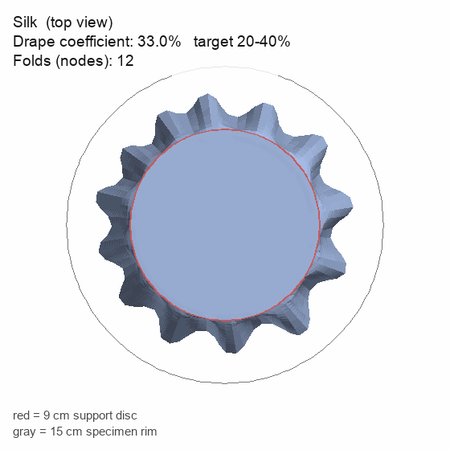
Looking straight down at the draped fabric. The shaded
area is its shadow (the drape coefficient); the wavy edge is its folds.
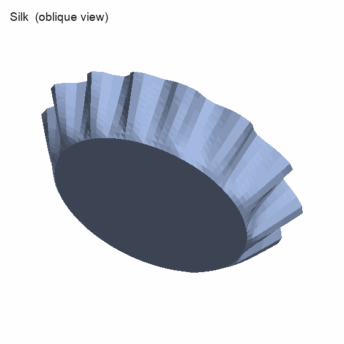
The same drape seen at an angle, showing the folds.
A strip held at the left, drooping under gravity. The blue
line is its centerline; its angle from horizontal is the droop.
Flag
Drape coefficient 28.2%
| observed folds 16
| cantilever tip droop 88.1°
| bend 0.83,
young-mod 1000,
Poisson 0.4,
density 1.0 kg/m²
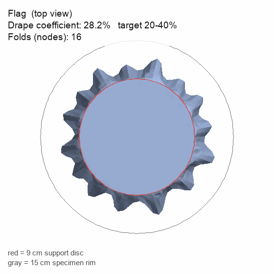
Looking straight down at the draped fabric. The shaded
area is its shadow (the drape coefficient); the wavy edge is its folds.
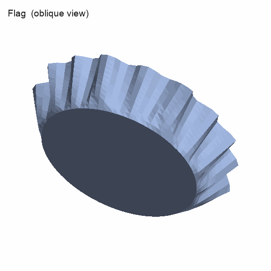
The same drape seen at an angle, showing the folds.
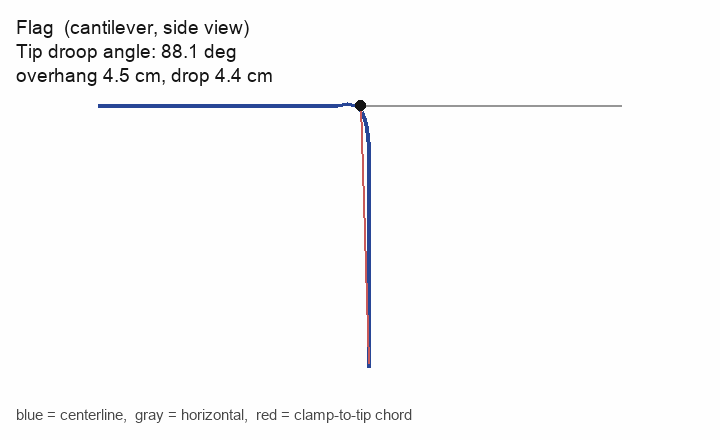
A strip held at the left, drooping under gravity. The blue
line is its centerline; its angle from horizontal is the droop.
Cotton
Drape coefficient 68.3%
| observed folds 12
| cantilever tip droop 82.6°
| bend 4.3,
young-mod 5500,
Poisson 0.35,
density 1.0 kg/m²
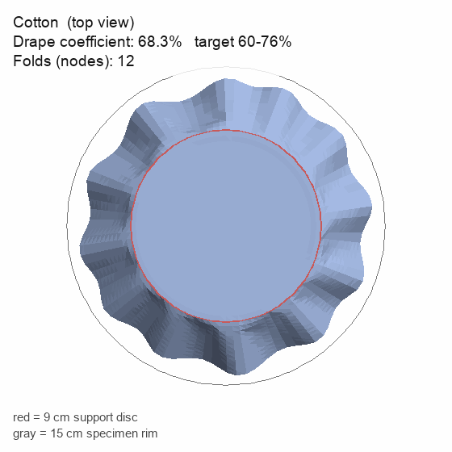
Looking straight down at the draped fabric. The shaded
area is its shadow (the drape coefficient); the wavy edge is its folds.
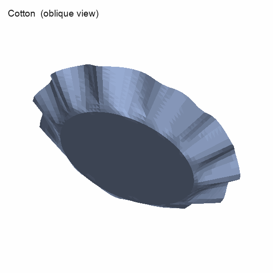
The same drape seen at an angle, showing the folds.
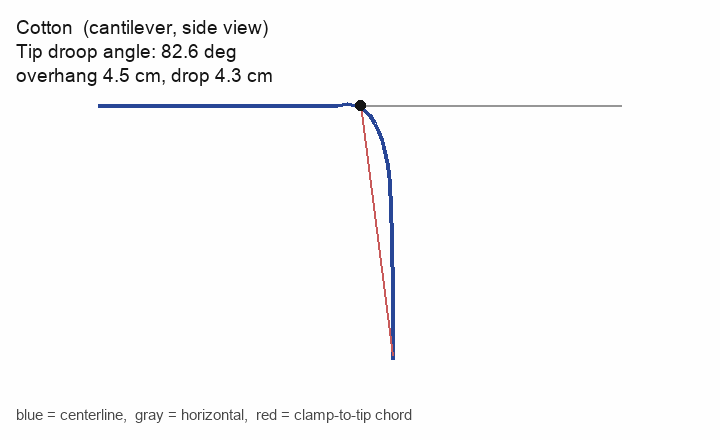
A strip held at the left, drooping under gravity. The blue
line is its centerline; its angle from horizontal is the droop.
Wool
Drape coefficient 61.5%
| observed folds 12
| cantilever tip droop 83.5°
| bend 3.67,
young-mod 2000,
Poisson 0.4,
density 1.0 kg/m²
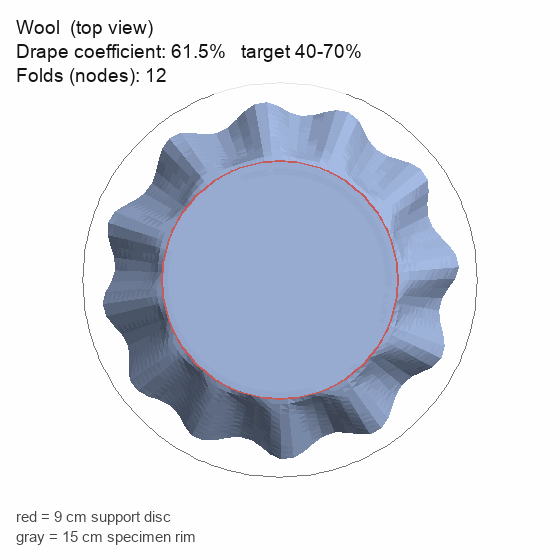
Looking straight down at the draped fabric. The shaded
area is its shadow (the drape coefficient); the wavy edge is its folds.
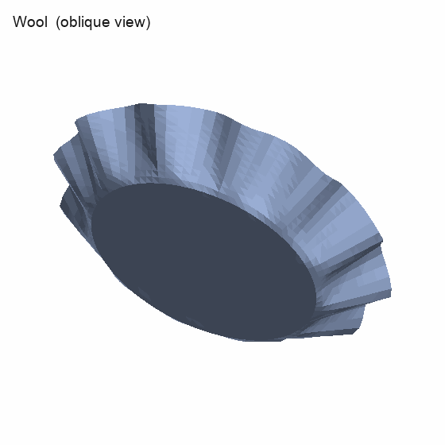
The same drape seen at an angle, showing the folds.
A strip held at the left, drooping under gravity. The blue
line is its centerline; its angle from horizontal is the droop.
Denim
Drape coefficient 83.4%
| observed folds 8
| cantilever tip droop 75.8°
| bend 10.0,
young-mod 10000,
Poisson 0.25,
density 1.0 kg/m²
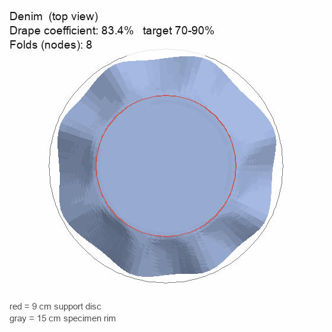
Looking straight down at the draped fabric. The shaded
area is its shadow (the drape coefficient); the wavy edge is its folds.
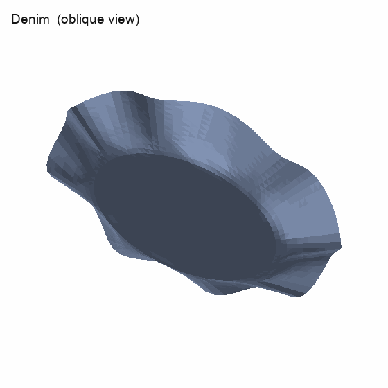
The same drape seen at an angle, showing the folds.
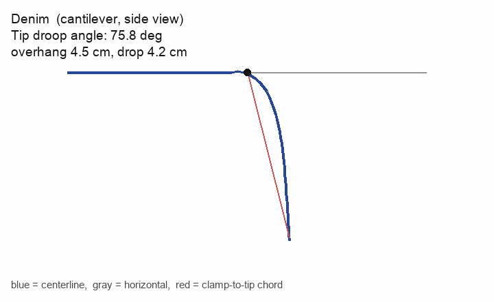
A strip held at the left, drooping under gravity. The blue
line is its centerline; its angle from horizontal is the droop.
Leather
Drape coefficient 66.9%
| observed folds 16
| cantilever tip droop 86.0°
| bend 1.8,
young-mod 13000,
Poisson 0.4,
density 1.0 kg/m²
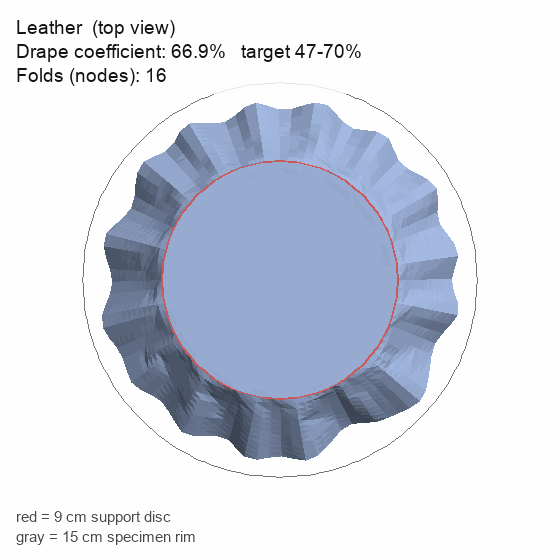
Looking straight down at the draped fabric. The shaded
area is its shadow (the drape coefficient); the wavy edge is its folds.
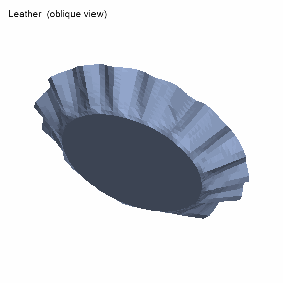
The same drape seen at an angle, showing the folds.
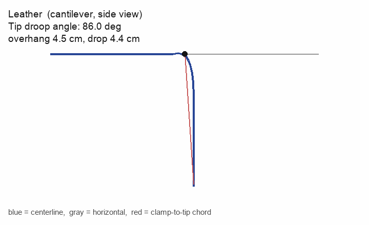
A strip held at the left, drooping under gravity. The blue
line is its centerline; its angle from horizontal is the droop.